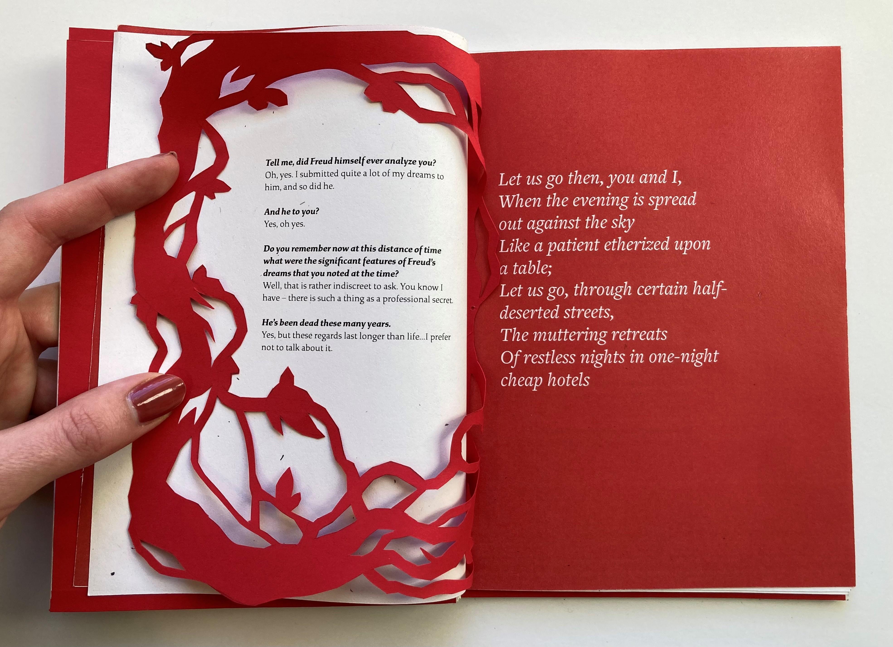
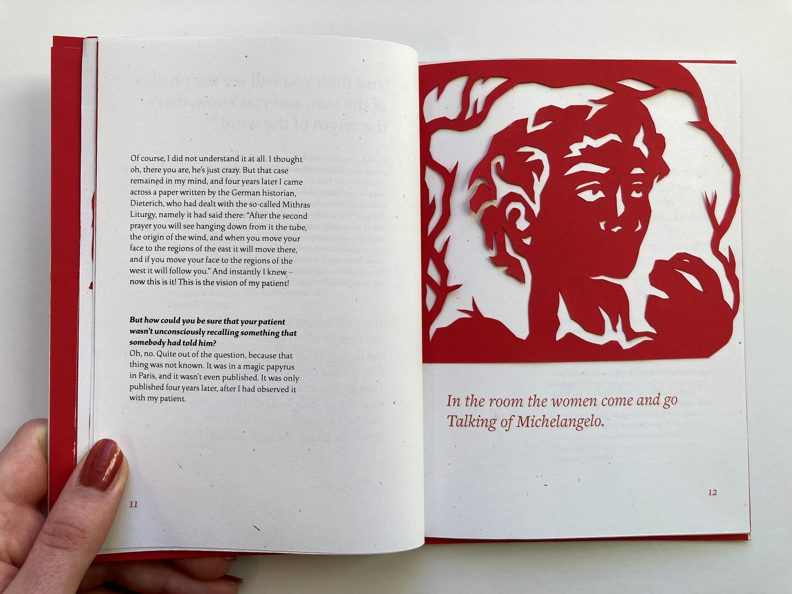
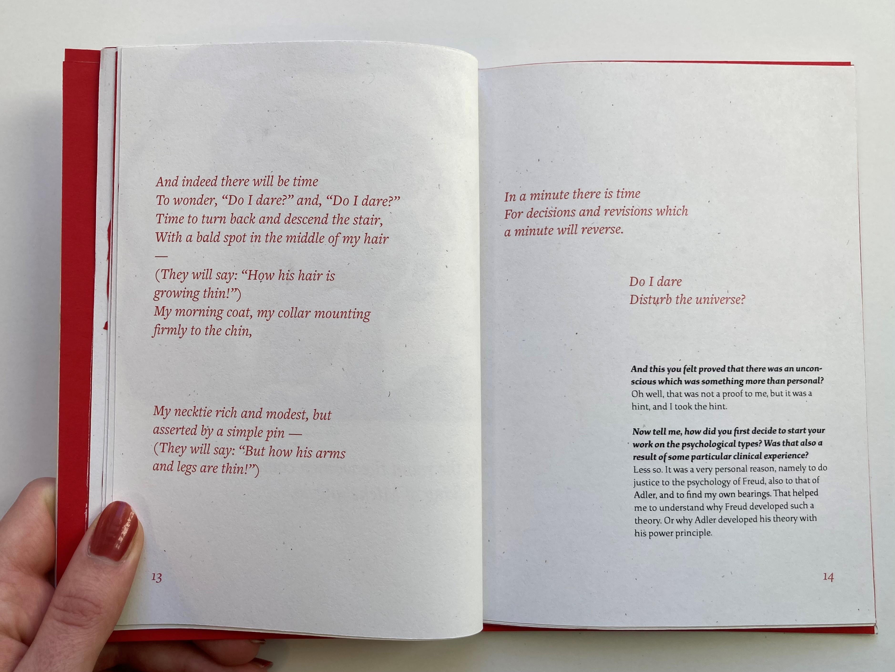
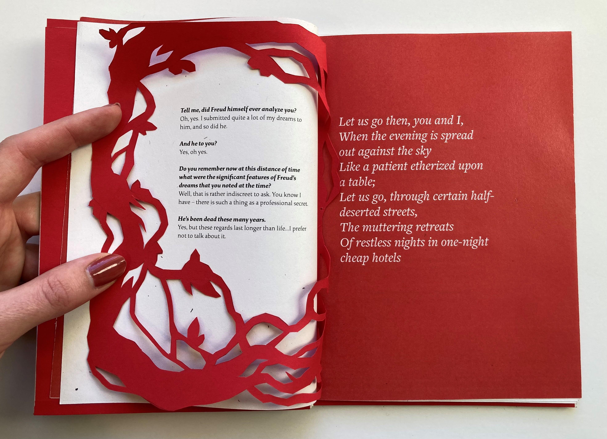
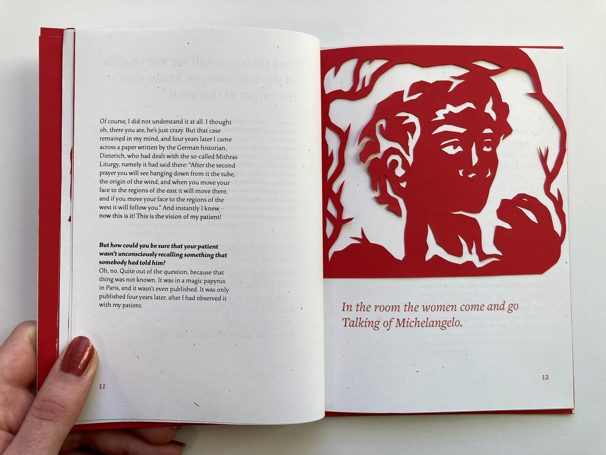
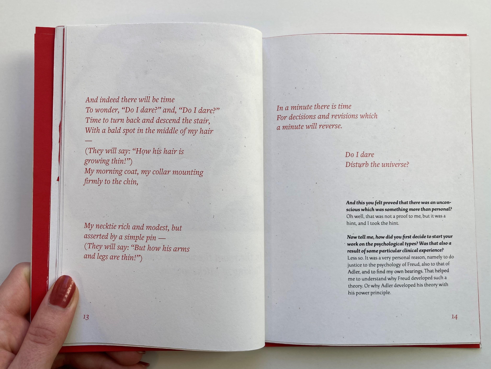

About Death
Back
"About Death" takes two works of writing, "The Face to Face Interview" with Carl Jung and "The Love Song of J. Alfred Prufrock" by T.S. Eliot, and explores their relationship through typography and paper cutting.
I drew inspiration from medieval religious texts, pattern design, and simple linework illustrations. The contrast between red and white and the two font families reference Jung's scientific, rational profession contrasted by T.S. Eliot's rich prose —
reason and passion, two perspectives on death, the afterlife, and the mission to live.
 






© Sasha Kostenko 2022. Created by Sasha Kostenko. sasha.kostenko@wustl.edu